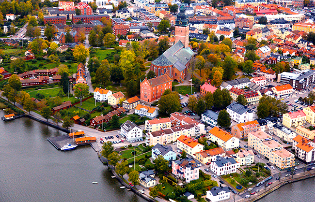
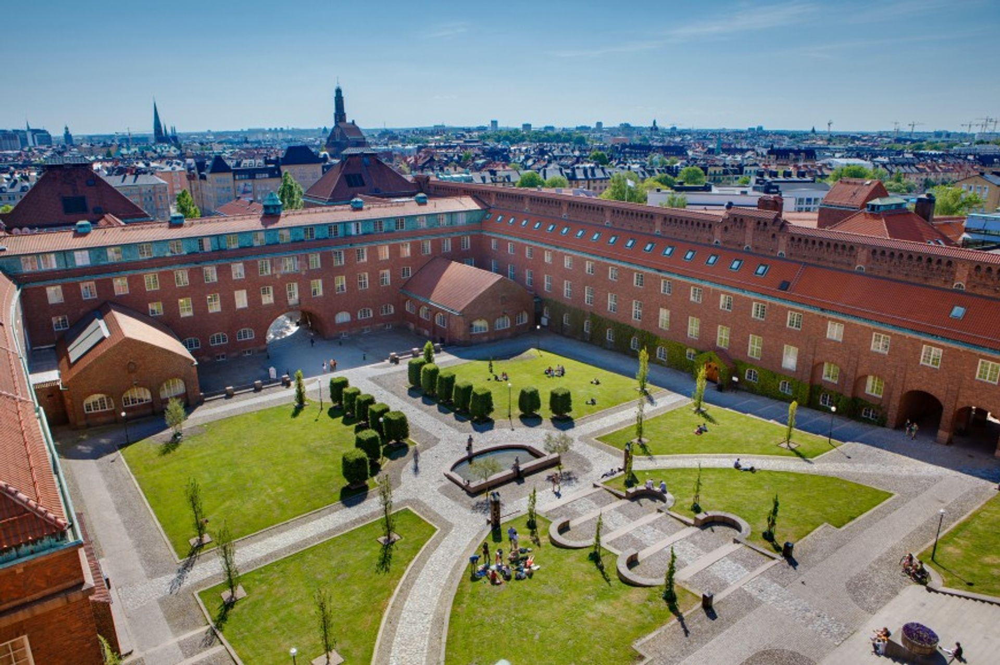

<!DOCTYPE html>
<html>
<head>
    <meta charset="UTF-8">
    <meta name="viewport" content="width=device-width, initial-scale=1.0">
    <title>2023 Summer Trip</title>

    <!-- Leaflet CSS -->
    <link rel="stylesheet" href="https://unpkg.com/leaflet@1.7.1/dist/leaflet.css" integrity="sha512-xodZBNTC5n17Xt2atTPuE1HxjVMSvLVW9ocqUKLsCC5CXdbqCmblAshOMAS6/keqq/sMZMZ19scR4PsZChSR7A==" crossorigin=""/>

    <!-- CSS -->
    <link rel="stylesheet" href="mapstyles.css">

    <!-- Leaflet JavaScript -->
    <script src="https://unpkg.com/leaflet@1.7.1/dist/leaflet.js" integrity="sha512-XQoYMqMTK8LvdxXYG3nZ448hOEQiglfqkJs1NOQV44cWnUrBc8PkAOcXy20w0vlaXaVUearIOBhiXZ5V3ynxwA==" crossorigin=""></script>
   
    <!-- JQuery -->
    <script src="https://ajax.googleapis.com/ajax/libs/jquery/3.6.3/jquery.min.js"></script>
    
    <!-- Leaflet.Geodesic -->
    <script src="https://cdn.jsdelivr.net/npm/leaflet.geodesic"></script>
    <link rel="stylesheet" href="travel/icons.css" />

    <style>
        @font-face {
            font-family: Trueno;
            src: url(../font/trueno_round_bold.otf);
            font-weight: bold;
        }
    </style>
</head>
<body>
    <div id="map"></div>
    <script src="travel/constants.js"></script>
    <script>
        // const abiskoParagraf = "Forskarmöten är Sveriges unga akademis sommarforskarskola. Här får man möta yngre, ledande forskare inom olika fält.<br>Forskarmöten anordnas i Abisko, i vacker fjällmiljö."
        const s23step1 = new L.Geodesic([MSP, AMS], air).bindPopup("<span style='font-family: trueno'><h1>Flyg till/från Amsterdam</h1><p>Tisdag 13 Juni</p></span>").addTo(mapContent);
        const s23step2 = new L.Geodesic([AMS, ARN], air).bindPopup("<span style='font-family: trueno'><h1>Flyg till/från Stockholm</h1><p>Mondag 12 Juni</p></span>").addTo(mapContent);

        $.getJSON("travel/summer2023/duluth-grandmarais.geojson",function(data){
            L.geoJson(data, {
                style: function(feature) { return car; }
        }).bindPopup("<span style='font-family: trueno'><h1>Duluth-Grand Marais Bilresa</h1><p>Fredag 9 Juni<br>Mondag 12 Juni</p></span>").addTo(mapContent);});

        $.getJSON("travel/summer2023/mpls-duluth.geojson",function(data){
            L.geoJson(data, { style: function(feature) { return car; }
        }).bindPopup("<span style='font-family: trueno'><h1>Bilresa från Minneapolis till Duluth</h1><p>Fredag 9 Juni</p></span>").addTo(mapContent);});

        $.getJSON("travel/summer2023/mpls-duluth.geojson",function(data){
            L.geoJson(data, { style: function(feature) { return bus; }
        }).bindPopup("<span style='font-family: trueno'><h1>Buss från Duluth till MSP</h1><p>Mondag 12 Juni</p></span>").addTo(mapContent);});
        
        $.getJSON("travel/summer2023/östra-sverige.geojson",function(data){
            L.geoJson(data, { style: function(feature) { return car; }
        }).bindPopup("<span style='font-family: trueno'><h1>Bilsemester genom östra Sverige.</h1><p>Fredag 21 Juli - Söndag 23 Juli</p></span>").addTo(mapContent);});

        // Skolor
        L.marker([59.37578177463682, 17.03763301315459], {icon: schoolIcon}).bindPopup("<span style='font-family: trueno'><h2 style='margin: 0; padding: 0;'><span style='color: #dc0d04'>Rays*</span> Sommarforskarskola</h2><h4 style='margin: 0; padding: 0'>* For Excellence</h4><p>Fyra Veckor från 16 Juni till 14 Juli av verklig utföring och framställing av forskning ur Europaskolan i Strängnäs.</p><h3><a href='https://raysforexcellence.se/' style='color: #dc0d04'>www.raysforexcellence.se</a></h3></span>", {  
            maxWidth: 260
        }).addTo(mapContent);
        L.marker([59.35021656910791, 18.07465636850562], {icon: schoolIcon}).bindPopup("<span style='font-family: trueno'><h2 style='color: #0073FF; margin: 0; padding: 0;'>KTH</h2><h4 style='margin: 0; padding: 0'>Kungliga Tekniska högskolan</h4><p>Här forskade jag på materialvetenskap under Dr. Antonio Capezza i tre veckor.</p><h3><a href='https://kth.se/' style='color: #0073FF'>www.kth.se</a></h3></span>", {  
            maxWidth: 260
        }).addTo(mapContent);

        // Flygplatser (MSP, AMS, ARN)
        L.marker([44.8848, -93.2223], {icon: airportIcon}).bindPopup("<span style='font-family: trueno'><h1 style='color: #0A202C'>MSP</h1><p>Minneapolis–Saint Paul International Airport</p>").addTo(mapContent);
        L.marker([52.3105, 4.7683], {icon: airportIcon}).bindPopup("<span style='font-family: trueno'><h1 style='color: #0A202C'>AMS</h1><p>Amsterdam Airport Schiphol</p><i>Koninklijke Luchthaven Schiphol</i>").addTo(mapContent);
        L.marker([59.6494, 17.9343], {icon: airportIcon}).bindPopup("<span style='font-family: trueno'><h1 style='color: #0A202C'>ARN</h1><p>Stockholm Arlanda Airport</p><i>Stockholm-Arlanda flygplats</i>").addTo(mapContent);
        
        // Annan Transport
        L.marker([46.7602, -92.1295], {icon: busIcon}).bindPopup("<span style='font-family: trueno'><h1 style='color: #0A202C'>Busshållplats</h1><p>Groome Transportation</p><i>Duluth, 12 Juni</i>").addTo(mapContent);
        L.marker([59.37042449724896, 17.028171452982825], {icon: trainIcon}).bindPopup("<span style='font-family: trueno'><h1 style='color: #0A202C'>Strängnäs Tågstation</h1><p>Tågstation</p><i>Hemstationen för pendling under min tid på Rays.<br>26 Juni -> 16 Juli</i>").addTo(mapContent);
        L.marker([59.33035638280159, 18.05638119565922], {icon: trainIcon}).bindPopup("<span style='font-family: trueno'><h1 style='color: #0A202C'>Stockholm Central</h1><p>Tågstation</p><i>Slutationen för pendling under min tid på Rays.</i>").addTo(mapContent);

        
        // Boenden (Park 11, MTKA, Grand Marais, Gnesta)
        L.marker([44.9085, -93.4870], {icon: houseIcon}).bindPopup("<span style='font-family: trueno'><h1 style='color: #0A202C'>5231 Holiday Road, Minnetonka</h1><p>Startpunkt den 9:e Juni</p>").addTo(mapContent);
        L.marker([59.4419, 18.0703], {icon: houseIcon}).bindPopup("<span style='font-family: trueno'><h1 style='color: #0A202C'>Parkvägen 11, Näsby Park</h1><p>Tisdag 13 Juni -> Söndag 18 Juni\nSöndag 16 Juli -> Fredag 21 Juli\nSöndag 23 Juli -> </p>").addTo(mapContent);
        L.marker([47.74597650437895, -90.347668823657], {icon: campsiteIcon}).bindPopup("<span style='font-family: trueno'><h1 style='color: #0A202C'>Grand Marais Campground</h1><p>Fredag 9 Juni -> Mondag 12 Juni</p>").addTo(mapContent);
        L.marker([59.186517267481086, 17.16532244587018], {icon: campsiteIcon}).bindPopup("<span style='font-family: trueno'><h1 style='color: #0A202C'>Marvikarnas Naturreservat</h1><p>Lördag 24 Juni -> Söndag 25 Juni</p>").addTo(mapContent);

        L.marker([58.546658168308, 15.004078255891896], {icon: beachIcon}).bindPopup("<span style='font-family: trueno'><h1 style='color: #0A202C'>Varamobaden, Motala</h1><p>Fredag 21 Juli</p></span>").addTo(mapContent);
        L.marker([56.01857038511105, 14.606012563424239], {icon: beachIcon}).bindPopup("<span style='font-family: trueno'><h1 style='color: #0A202C'>, Blekinge</h1><p>Lördag 22 Juli</p></span>").addTo(mapContent);
        L.marker([56.72518977639978, 16.510568552130806], {icon: beachIcon}).bindPopup("<span style='font-family: trueno'><h1 style='color: #0A202C'>Prästviksbadet, Öland</h1><p>Lördag 22 Juli</p></span>").addTo(mapContent);

  
        mapContent.addTo(map)
        fitBounds()
    </script>
</body>
</html>